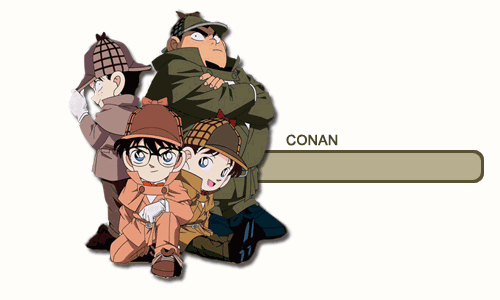
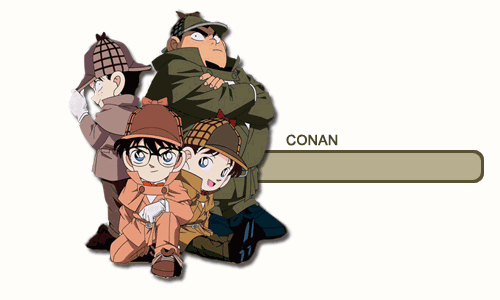
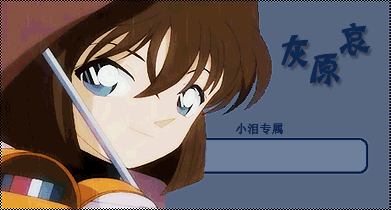
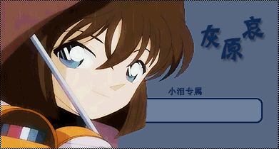
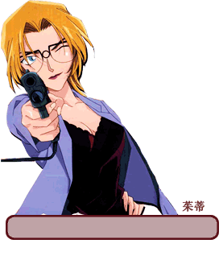
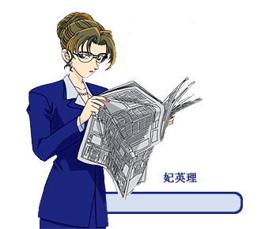
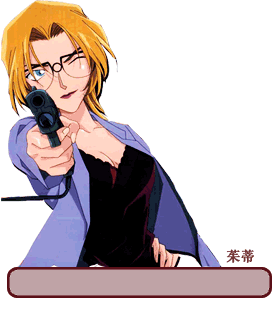
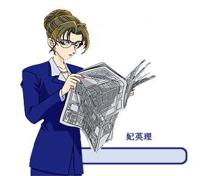
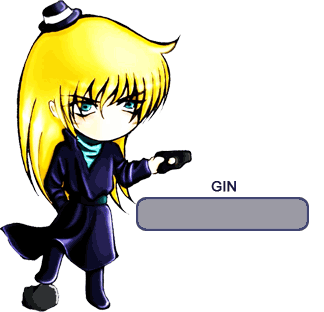
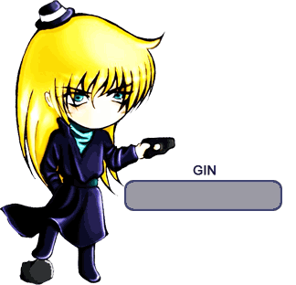

人物介绍
 

 

 



 



姓名：江户川 柯南
性别：男
外表看似小孩，其真实身份是高中生侦探——工藤新一。 和青梅竹马的同学毛利兰一起去游乐园玩，目击到黑衣男子的可疑交易现场，被灌下开发中的药物， 变成了小学生的身体。那天以后，为了隐藏真实身份，化名江户川柯南，在青梅竹马的毛利兰家寄住的同时，日复一日解决了许多案件。一切都是为了恢复自己的身体。

姓名：工藤 新一
性别：男
崇拜夏洛克·福尔摩斯的高中生侦探。5月4日出生，17岁。帝丹高中2年级B班。还是高中1年级学生的时候，在去往洛杉矶的飞机上解决了杀人案， 在那里和目暮警官等人相识。此后，作为高中生侦探活跃起来。特长是足球，头脑清醒出众。

姓名：毛利 兰
性别：女
新一的青梅竹马，帝丹高中2年级B班，空手道部女主将，都大会中有头号实力的文武双全的女生。一直喜欢着新一，在他突然消失后等待着他的归来。有时柯南的名推理会与新一的身影重叠，她开始像母亲一般 温柔地照顾着柯南和少年侦探团。此外，和铃木园子是青梅竹马的挚友，从以前开始便无话不谈。
姓名：毛利 小五郎
性别：男
小兰的父亲，前警视厅搜查一课刑警，与目暮警部是故交。现在在毛利侦探事务所营业，多亏了柯南的名推理，以“沉睡的小五郎”闻名。经过小兰的拼命努力， 经常与分居中的妻子——妃英理见面，有好色的一面妨碍着，很难坦率地重修旧好。
姓名：阿笠博士
性别：男
住在新一隔壁的古怪发明家。知道柯南真实身份的少数人物之一。是发明了领结型变声器、脚力增强鞋、侦探徽章和足球射出腰带等许多侦探产品的理解者， 也照料着少年侦探团。在灰原哀逃离组织之后保护着她。
姓名：灰原哀(雪莉)
性别：女
外表是小孩，但其实是黑衣组织的一员，新一被灌下的毒药（APTX4869）的开发者，代号雪莉。姐姐被杀，背叛了组织，为了逃脱而服下了药物，变成小学生的样子。 现在藏在阿笠博士家，和柯南一起在帝丹小学上学，另一边研究着解药。柯南是这世上唯一能与她分享相同境遇的对象。
姓名：吉田 步美
性别：女
少年侦探团的偶像存在。自称“可爱的女侦探”，好奇心旺盛，但也是个爱哭鬼。 另外，很喜欢柯南，她在灰原转学之初，也曾含有醋意地问“你喜欢柯南吗”，但现在是少年侦探团女成员，进行着团队合作。
姓名：圆谷 光彦
性别：男
认真的头脑派，有时也会解救柯南的危机……有协作性，是个绅士，有时也会守护步美和灰原。
姓名：小岛 元太
性别：男
自称少年侦探团团长。经常说错话，有无人匹敌的强大正义感。有很大食量的吃货，最喜欢鳗鱼饭。
姓名：铃木 园子
性别：女
小兰的同学兼挚友。和工藤新一也是同学。 铃木财团的大小姐，喜欢流行的事物与品牌。好奇心强，跟小五郎很合得来，完全没有大小姐架子。与京极真是恋人关系。
姓名：世良 真纯
性别：女
转学到小兰班级的女高中生侦探。似乎和小兰与新一在过去见过面，详细情况不明。有两个哥哥，大哥是赤井秀一。 喜欢用的摩托车是雅马哈 XT400E Artesia。现在住在酒店里，和神秘少女一同生活。
姓名：羽田 秀吉
性别：男
达成四冠的将棋名人。因为名字像羽柴秀吉，所以被称为“太阁名人”。发自内心喜欢前女友交通课美女警官宫本由美。
姓名：远山 和叶
性别：女
平次青梅竹马的女朋友。父亲是大阪府警刑事部长。坦率体贴，拥有细腻的心。宣称担任平次姐姐的角色，其实发自内心喜欢平次。此外，两个人在幼年玩的时候被手铐困住，其间是连洗澡上厕所也在一起的孽缘。 当时的锁的碎片，总是携带在和平次成双成对的护身符里，而这个护身符拯救了平次的危机。
姓名：服部 平次
性别：男
关西高中生侦探。推理能力不在同龄的新一之下。父亲服部平藏是大阪府警本部部长。这多亏了从小时候就混熟了的大泷警官那里，偷偷求教的调查情报的方法。 此外，黝黑的皮肤是爷爷辈的隔代遗传。知道柯南的身份是新一的少数人之一。与柯南一起解决了诸多疑难案件。
姓名：怪盗基德(黑羽快斗)
性别：男
变装达人。轰动世界的神出鬼没的怪盗。因其国际犯罪者编号而被称作怪盗1412号，总是会送上预告函，将警察玩弄于股掌之间，因偷盗成功的华丽伎俩，被世人称作“怪盗基德”。实际上现在的基德是第二代， 真实身份是高中生黑羽快斗。他为了探求亡父的死因，继承了怪盗基德的身份。快斗的脸和新一一模一样。
姓名：妃 英理
性别：女
毛利小五郎的妻子，也是毛利兰的母亲。但从10年前起就在分居中。推理力、判断力都无可挑剔的女律师。有“司法界的女王”的别称。 柯南对她有独特的恐惧感，她对柯南的观察力、推理力、知识量有正面的评价。拥有看穿真相的眼光，信念不随感情而动摇。
姓名：工藤优作
性别：男
新一的父亲。世界知名推理小说家，拥有在新一以上的头脑和推理力的唯一人物。 新一至今仍未有超越优作的推理。头脑清晰，也喜欢吓新一一跳的恶作剧。现在和妻子有希子住在美国。
姓名：工藤 美希子
性别：女
新一的母亲，前人气女演员，和优作结婚的同时引退。 担心独自面对黑衣男子的新一的同时，偶尔也会回国以乐观的形象出现在新一面前支持着他。
姓名：目暮 十三
性别：男
搜查一课强行犯三系的警部。也是小五郎刑警时期的上司。顺带一提，一直都带着帽子，是为了隐藏过去案件中负的伤。
姓名：高木 涉
性别：男
警视厅搜查一课强行犯三系的刑警。 目暮警部的部下。 冒失的性格，有时会出现大失误，也有时会被卷入案件核心。与在职场备受欢迎的佐藤刑警恋爱进行中，可总是被打搅。
姓名：千叶 和伸
性别：男
警视厅形警部搜查一课强行犯三系的刑警。 目暮警部的部下，高木刑警的后辈。特摄发烧友。如其外表一样，是个宁要饱食不要美色的人。

姓名：佐藤 美和子
性别：男
警视厅搜查一课强行犯三系的刑警。 目暮警部的部下，优秀的刑警。从思念的人殉职的过去的案件中走了出来，现在正和高木刑警职场恋爱进行中。
姓名：安德雷 卡迈尔
性别：男
FBI调查官。强壮的大块头外表，实际上是有着纤细性格的人。 有异于常人的驾驶技术，有时会以身体作为盾牌，保护柯南等人。
姓名：冲矢 昴
性别：男
东京大学工学部的大学生，寄住在工藤家的神秘人物。常穿着带领子的衣服遮住脖子。爱车是斯巴鲁360。他的真实身份是"赤井秀一"
姓名：贝尔摩得(苦艾酒)
性别：女
黑衣组织的首领特别关照的直属部下。 擅长变装，为了搜索雪莉变装成过各种各样的人物。看穿了柯南和灰原的真实身份，可不知为何这件事却对组织保密。

姓名：伏特加
性别：男
在黑衣组织中作为实际行动部队，主要负责潜入调查。 琴酒的部下，与其一同行动。是对组织的恐怖有着切身体会的一个人，其忠心不改。必要之时，会展现彻底的冷酷。
姓名：琴酒
性别：男
给柯南（工藤新一）灌下开发中药物的罪魁祸首。黑衣组织成员之一，与首领（那位大人）直接联络的干部级别的人物。 性格极其冷酷，拥有敏锐的观察力、洞察力，毫不留情地排除妨碍组织的人物。爱车是保时捷356A。
姓名：安室透
性别：男
被小五郎收为弟子，在事务所楼下的波洛咖啡厅打工的店员。 自称黑衣组织的“波本”，擅长收集情报，拥有“降谷零”这个名字……其真实身份是：日本公安部潜伏在“黑衣组织”的卧底
姓名：赤井 秀一
性别：男
FBI调查官。戴黑色针织帽，叼着香烟，特征是左撇子。 和他的同伴追踪着黑衣组织的贝尔摩得。冷静的推理能力和调查手段经常能与柯南匹敌。也作为优秀的狙击手活跃着。
.png)